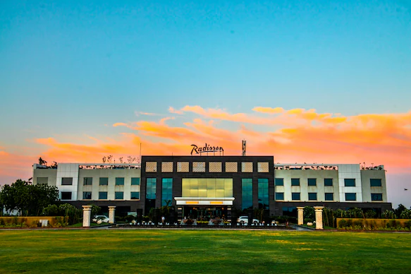
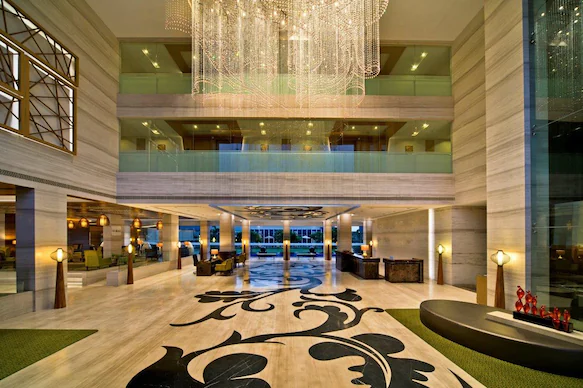
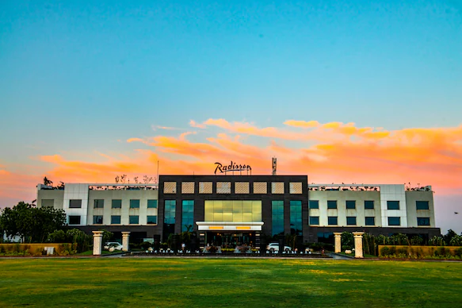
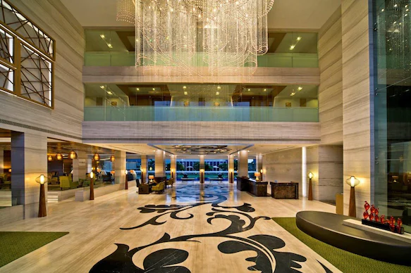

Kutch, India’s Wild West, is a geographic phenomenon. It derives its name from katchua or kachbo, meaning a tortoise and is surrounded by sea water. Ancient temples, attractive palaces, rugged forts, flamingos, wild asses — you have it all in Kutch. But most of it is covered by Rann of Kutch, a shallow wetland with marshy salt flats that look like an endless mass of snow spread as far as the eye can see. The Rann of Kutch is divided into the Great Rann Of Kutch and the Little Rann Of Kutch.
Kutch also hosts a three-month long annual festival called Rann Utsav which attracts thousands of people to the beautiful White Desert. PM Modi too has attended this festival several times. The beauty of the Rann increases manifold when a riot of colors are splashed when people wearing colorful, ethnic wear perform folk dance and music during the Rann Utsav.
The landscape is also dotted by villages that produce some of India’s finest textiles glittering with exquisite embroidery and mirror work. The district is also famous for the ecologically important Banni grasslands, which with its seasonal marshy wetlands form the outer belt of the Rann of Kutch. The Mandvi Beach is another attraction that is a must-visit for every traveler. You are sure to find mental peace and serenity after taking a stroll on this calm, clean beach.
Hotels serving vegetarian food are in plenty. The eatables are mostly made out of milk, bajara and wheat. Kutch’s staple diet does not include rice but pulses (dal) are available.When in Kutch, do try their local cuisine called the Kutchi cuisine. It is quite different from Gujarati fare and has minimum oil and is not sweet. It is in fact one of the healthiest cuisines with their dishes made using fresh ingredients. JP Resort has a restaurant that offers authentic Kutchi food. If you can’t do without non-veg food, head to Noorani Mahal. Other places to eat are Osho Restaurant if you like Gujarati thali and Neelam restaurant for other Indian cuisines.
There are a number of lodging options available in the main town and city area of this region. If you are attending Rann Utsav, you can stay in luxury tents near the venue. These offer package deals where you can go for sightseeing, adventure sports and more. But if you prefer staying in a resort, you can opt for Rann Riders, an eco-resort that also organize camel, horse and jeep safaris. Shaam-e-Sarhad is a village resort that offers a rustic experience to travelers. The Fern Residency Mundra is an option for those who wish to stay in a standard hotel.
 


